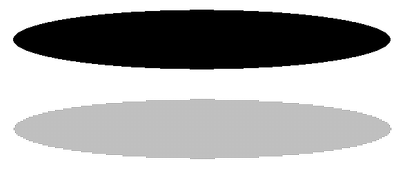
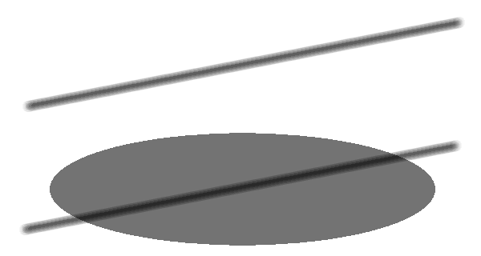
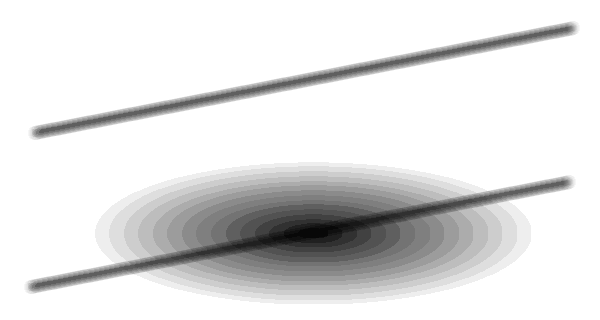
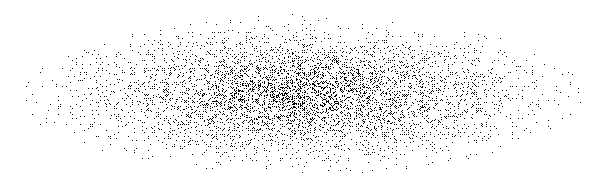
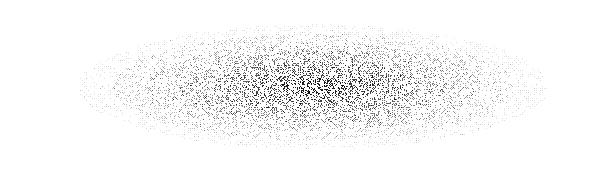
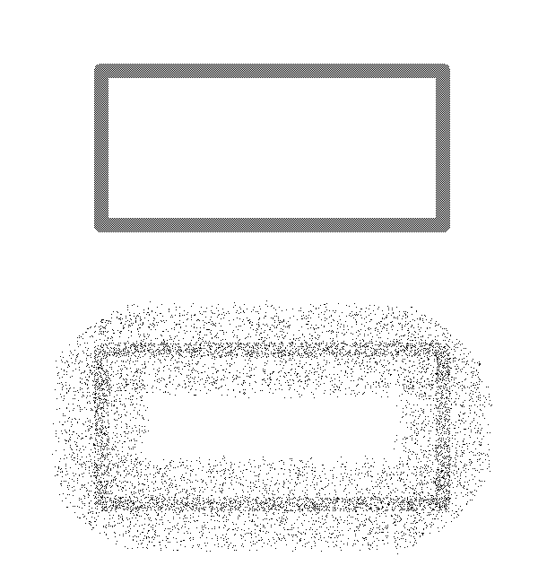

The Shape of Ellipse with Fill
The Shape of Ellipse with Fill
Function of The Shape of Ellipse with Fill draw filled ellipse.
Operations of draawing are equivalent the shape of ellipse with frame.
 Normal
Normal
Filled ellipse is drawn with a selected tile pattern.
The Pen Style, The slider of width and The slider of tint are not applied.

example
 Uniformed Tint
Uniformed Tint
A percentage of color mixing is based on the slider of tint, which tint is uniformed within specified region.
The Pen Style, The Tile Pattern and The slider of width are not applied.

example
 Tint
Tint
A steps of region division is based on multiply the slider of width by 16.
A percentage of color mixing is based on the slider of tint.
The Pen Style and The Tile Pattern are not applied.
A tint of filled region is gradually increase, as a center of region is maximum tint.

example
 Air Brush
Air Brush
A steps of region division is based on multiply the slider of width by 16.
The selected number of slider of tint is used as frequency.
The Pen Style and The Tile Pattern are not applied.
A frequency of dots occured of filled region is gradually increase, as a center of region is maximum frequency.

example
 Gradient
Gradient
A steps of region division is based on multiply the slider of width by 16.
The selected number of slider of tint is used as a frequency of dots occured and a percentage of color mixing.
The Pen Style and The Tile Pattern are not applied.
A tint of filled region is gradually increase, as a center of region is maximum tint.
Also, a frequency of dots occured of filled region is gradually increase, as a center of region is maximum frequency.

例図
 Scattered
Scattered
A selected number of slider of width is the range of scatter.
A selected number of slider of tint is the frequency of scatter.
The Pen Style and The Tile Pattern are not applied.

example
 Water Drop
Water Drop
Each points within specified region set value that average is calulated by surrounding points.
The Pen Style, the Tile Pattern, the Slider of Width and the Slider of Tint are not applied.
example